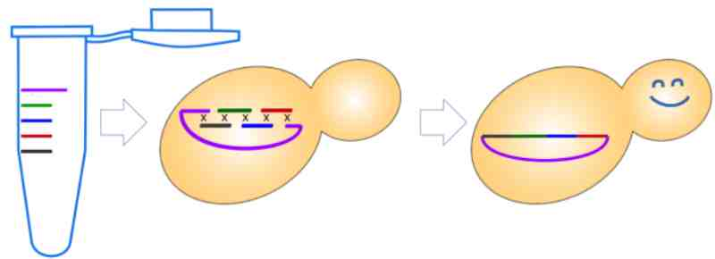

High Efficiency Transformation Protocol (TRANSFORMATION OF YEAST BY THE LiAc/SS CARRIER DNA/PEG METHOD)
This protocol can be used to generate sufficient transformants in a single reaction to screen multiple yeast genome equivalents for plasmids that complement a specific mutation. It can also be used to transform integrating plasmids, DNA fragments and oligonucleotides for yeast genome manipulation. Finally, it is used to optimize the conditions for transformation of a particular yeast strain, for example, the transformation of a plasmid library into a two-hybrid yeast strain transformed with a bait plasmid by the Rapid Transformation Protocol. The High Efficiency Protocol can also be employed to transform a yeast strain simultaneously with two different plasmids, such as the two-hybrid bait and prey plasmids. This protocol has been available online since at least around 1996. There is also a publication:
Gietz, R Daniel, and Robin A Woods. 2006. “Yeast Transformation by the LiAc/SS Carrier DNA/PEG Method.” Methods Mol. Biol. 313: 107–20 (pubmed).
Day #1 Pre-culture
Inoculate the yeast strain into ~5 ml of liquid medium (YPD or SD selective medium) and incubate overnight on a rotary shaker at 200 rpm and 30°C. This culture should ideally reach stationary phase. Most of the time this culture is made the day before the transformation, but the culture can be left in the incubator for more time if required.
Day #2 Transformation
- Determine the titer of the yeast pre-culture by pipetting 50 µL of the pre-culture into 1.0 ml of water in a spectrophotometer cuvette and measuring the OD at 640 nm (OD640 pre-culture in the equation below). You can use pure water as blank, the OD increase due to the medium is negligible. Transfer 50 mL of the pre-warmed YPD to the pre-warmed culture flask and add cells to give cells/mL (OD640 = 0.17 using a GENESYS20 spectrophotometer). Usually, this means adding 1 - 4 mL of the pre-culture to a 50 mL culture. Use the formula below to calculate the inoculation volume:
IMPORTANT
Follow the instructions for OD measurements here.
-
Incubate the flask on an orbital shaker at 30°C and 200 rpm. It is important to allow the cells to complete at least two divisions. This will take 3 to 5 hours, depending on the strain. Final OD640 should be mor than . This final OD640 corresponds to cells/mL. Transformation efficiency (transformants/ µg plasmid/
1.0e8cells) remains constant for 3 to 4 cell divisions. This means that a 50 mL culture with a final OD640 of is sufficient for forty transformations. -
Centrifuge the cells at 3000 g for 5 min and discard the supernatant. Resuspend cells in 25 ml of sterile water, centrifuge again and discard the water. Resuspend in 1 ml of sterile water. Alternatively, if the cells are not to be used immediately, do not centrifuge, instead pour the culture into a 50 mL sterile FALCON tube and put the tube on ice. This tube can be stored for at least a month and still give efficient transformations. If the tube is stored for >=2 days, the first centrifugation step is not necessary, decant the culture to remove enough culture to fit the remaining cells in a 1.5 mL Eppendorf tube.
-
Transfer the cell suspension to a 1.5 mL Eppendorf tube, centrifuge for 20 sec and discard the supernatant.
-
Add water to a final volume of 1.0 ml and vortex mix vigorously to resuspend the cells. This means that you add a bit less that 1 mL of water, keeping an eye on the 1 mL mark on the Eppendorf tube. You can store the cells on ice for around one month at this point keeping reasonable competence.
-
Transfer cells into a 1.5 ml Eppendorf tubes, one for each transformation, centrifuge at top speed for 20 sec and remove the supernatant. If the final OD640 was significantly different from 0.689 then increase or decrease the volume transferred using the formula below or else transfer 100 µL which should contain cells.
-
Thaw 300 µL frozen PEG/LiAc/ssDNA (PLS) for each transformation. Keep the mix on ice.
-
Add 300 µl of PLS to each transformation tube. Do not mix the cells yet.
-
Add 60 µL DNA + water and resuspend the cells by vortex mixing vigorously.
-
Incubate the tubes in a 42°C water bath for 40 min. The optimum time can vary for different yeast strains. Please test this if you need high efficiency from your transformations.
-
Centrifuge at top speed for 30 sec and remove the supernatant with a pipette.
-
If using an antibiotic such as geneticin for selection, add 1 mL of YPD to each tube and incubate for 4 h - o/n at 30 ºC. Do not shake the tubes, as the carbon dioxide will pop the tube open. If you want to incubate with shaking, transfer the culture to a 50 mL sterile FALCON tube and close tightly. Centrifuge at top speed for 30 sec and remove the supernatant with a pipette at the end of the incubation.
-
Pipette 200 µL of sterile water into each tube; stir and resuspend the pellet by pipetting up and down.
-
Take out ~10% of the volume to a clean Eppendorf tube and store on the bench. The transformants will survive for weeks. These cells are good to have if the plate grows so dense so that isolating colonies become difficult.
-
Add about 1/2 mL 5-8 mm glass spheres (~10-15 spheres) to the Petri dish with the appropriate selective medium. Pre-warming these plates to 30ºC increase efficiency.
-
Spread the cells by shaking the glass spheres (the samba method).
-
Incubate the plates at 30°C for 2 to 4 days.
General info
Yeast Transformation!!!!!!!!!!!
R.D. Gietz GIETZ at BLDGHSC.LAN1.UMANITOBA.CA
Sat May 14 23:25:09 EST 1994
Previous message: plasmids for trp1 and his3 disruption
Next message: New Saccharomyces Sequences 05/14/94
Messages sorted by: [ date ] [ thread ] [ subject ] [ author ]
Hello to all you Buddies striving to get the most out of your
transformations!!!!
There have been a number of articles posted to this board discussing
transformation efficiency. How do I get more etc. What is the best method?
Let me start by saying that all strains are not created equal when it comes
to transformation efficiency when using the different methods! I have
found that a strain that transforms with a medium efficiency with
LiAc/ssDNA/PEG transforms better with electroporation. Again If I take all
the strains I normally use in my lab and compare there is a wide difference
in the TRAFO efficiency we see! There are a few things one can do to
squeese the most TRAFOs out of a strain with the LiAc/ssDNA/PEG method.
1. Make good single stranded salmon sperm Carrier DNA! The key is to keep
the DNA as large as possible (MW) but still be able to handle it after
boiling and quick cooling! As most know that if you dissolve large
molecular weight DNA in TE at 10 mg/ml and boil and quick cool you get a
very stiff gel. Not good for adding to a TRAFO reaction. Therefore I make
100mls of 10 mg/ml and once insolution I sonicate for 30 sec with a large
horn and then test 1 ml of it for the 5 min boil quick cool test. Usually
it takes 2 -3 30 sec blasts to get the DNA small enough that it will stay a
liquid after the boiling and quick cooling. I have recently found that
some batches of salmon spern DNA from Sigma donot need to be phenol
extracted to give very good transformation. If you have having problems
with the 10mg/ml solution make one at 1 mg/ml. This solution is easier to
handle but increases the volume of the cDNA added to the TRAFO reaction. I
find that good carrier DNA is very important for good TRAFO efficiencies.
Fatima mentioned that dirty DNA (DNA with RNA from the plasmid prep) is
better the clean stuff. Well She is right. In our first paper Robert
Schiestl and I showed that RNA can also be used as a very effective
carrier. So dont go to great lengths to clean up your DNA! (Which the
mammalian transfections require) RNA contamination actually helps.
2. To get the best TRAFO efficiencies out of your strain one should
optimize a number of variables. The heat shock is very important. Most
people dont like to give a 15 or 20 min heat shock at 42¡ but believe me
most strains need it. If your strain is heat sensitive, reduce the
temperature to 40¡ or 37¡ but do the experiment to see what duration gives
you the best transformation. You can add DMSO or Ethanol as some
references have eluded to but we have found that if your heat shock is
optimal you get no enhancement by adding these things in the strains we
have tested. Try it though, it may work for you!
3. Optimize the amount of carrier DNA for your strain. Some carrier preps
differ and we have have seen some strains that need 75 ug instead of 50 for
the best TRAFO.
4. Growth conditions are important. Make sure that your culture is
actively dividing! Most strains transform best with LiAc after they have
gone through 2 division. We subculture to 5 x 10^6 cells/ml and let grow
to 2 x 10^7 cells per ml. This takes 3 - 4 hrs and is well worth the wait
if you are trying to eek out all the TRAFOs you can.
5. The % PEG in the TRAFO reaction is fairly important as the peak is quite
narrow. If it gets too high TRAFOs go down dramatically! We had a two
month period in my lab were we lost the ability to get good TRAFOs. We
tracked it down to PEG which was stored with a loose lid and was at a
concentration higher than 50% thus reducing the TRAFO efficiency. Follow
the TRAFO recipe exactly and make sure your PEG is 50% weight by volume!!!
Thats 50 gms of PEG 3350 MW in a final volume of 100mls.
6. If you need to put a library into a strain along with another
plasmid like in the two hybrid system of Fields and Song then it is best to
transform in the bait plasmid first (pMA424 or pAS or equivalent). Then
grow a 10 ml culture of this strain selectively, to keep the bait plasmid
in the cells, in SC-HIS or TRP to give about 1-2 x10^7 cells/ ml. I then
dump this 10 mls into 40mls of warm YPAD and grow for 2 generations. There
is usually negligable plasmid loss in two generations. Transform as usual
and plate onto double omission medium. Contrary to some opinion we have
found that transformation of two plasmids from a mixture is only 30 -40%
that of a single plasmid.
7. Some strains never give good TRAFO by LiAc/ssDNA/PEG. With these I
would go to another method as suggested by others. The Electroporation
method of Manivasakam and Schiestl,1993 NAR 21:4414-4415 is a good one.
8. Another thing I have found that make a difference is the pH of the
selective medium you are plating on. We routinely adjust to pH 6.5. If it
is too acidic this appears to decrease transformation efficiency. Another
important point that some forget is to keep your SC-minus medium away from
light. We have traced poor TRAFOs and just plating efficiency to plates
that have been expose to 24 hrs of fluorescent light. Cover those plate
with a box when drying and keep the cold room light off (if thats where you
store them) or else store them in covered container. YPAD plates dont seem
to be affected but SC-minus medium is seriously affected.
REFERENCES for all this stuff are
Schiestl and Gietz 1989 Curr Genet 16:339-346
Gietz and Schiestl 1991 Yeast 7: 253-263
Gietz et al 1992 NAR 20 1425
Schiestl et al 1993 Methods:A companion to methods in Enzymology 5:79-85
There are also another other book chapter coming out discussing
how to TRAFO to the MAX
Watch for: Molecular Genetics of Yeast (Oxford University Press) Due soon
Also another is planned from CSHLs.
Anyone that has specific questions about TRAFO please feel free to drop me
a message to the address below!
GOOD TRAFOs!!!!!!!!
Dan Gietz
**************************************************************************
R. Daniel Gietz Ph.D.
Department of Human Genetics
University of Manitoba
770 Bannatyne Ave, Rm250
Winnipeg, Manitoba, Canada R3E0W3
Tel(204)789-3458 Fax 204-786-8712 Email:GIETZ at BLDGHSC.LAN1.UMANITOBA.CA
*****************************************************************************
Email to Dr Daniel Gietz, Feb 17, 2014
Dear Dr. Gietz,
I have used your transformation protocol (The Best Method) for many years, first as a PhD student and then as
the principal yeast transformation protocol in my research group.
It worked very well in my hands ever since the first time, but I never had to push it very far although
I transformed with two plasmids several times.
I am trying to set up a screening of a genomic expression library in a PGI1 mutant. This mutant is a bit sick
so we would expect lower transformation efficiency.
My problem is really that the standard protocol using the wt CEN.PK strains (famous for being easy to work with)
with an empty circular 2µ URA3 plasmid gives low and very variable results.
You give some indications of important variables on your site.
We normally mix all components except DNA in a tube and add the right amount to the pellet.
We then add DNA, water if necessary, resuspend with vortex and then heat shock for 40 min.
I wonder if there are more tricks in the book nowadays and what are the most common mistakes that the
students make in your opinion? Do you still sell your kit?
I would be grateful for any tips on these matters.
Sincerely,
Bjorn Johansson
Hi there Bjorn
Sorry for not answering earlier.. i have been very ill with that flu all last week..
I would check your heat shock for optimum time.. some strains we work with need more and others
need less time..
One of the common mistakes i have corrected is a student putting in the concentrated LiAc directely onto
the yeast pellet before adding the PEG.. some strains is LiAc sensitive and this sometimes severely reduces
the Trafo efficiency..
I would also test your strain for LiAc sensitivity.. sometimes you need to reduce the exposure time in LiAc to
keep the viability up.
No unfortunately i do not sell my kit anymore.. could not get any companies interested in selling it.. not enough volume
What i normally do when i need transformants is to scale up.. get the best Trafo out of a single reaction and just scale up
50x 100x or even 200x
Good luck with your research
Dan Gietz
Email Tue, May 30, 2006
Dear Dr. Gietz,
I am using your protocol "The BEST METHOD" to transform a library into AH109. I plan to screen the library by mating,so
there will be only one plasmid in AH109.
I managed to reach a transformation efficieny of 3*10-5 cfu/microg DNA which seems to be ok compared to published figures.
What I wonder is how many transformants can I get from one tube, provided that I add enough DNA? I realize that I could do
the experiments, but I suspect that there is some rule of thumb on how many transfromants to get from each tube when transforming
a library.
Thank you for your time!
Sincerely,
Björn Johansson
Well we can usually get about 100,000-200,000 per tube when we do a standard trafo.. with 100 ng of plasmid.. if we up the
plasmid to 1 microgram we can get up to 500,000 to 1 million transformants in a tube but that is only with the best strains...
AH109 is about a medium transformer... When we scale up to do a 60X scale up and use a fair bit of plasmid we can generate
up to 12 to 20 million in this transformation with AH109.
Good luck
RDG